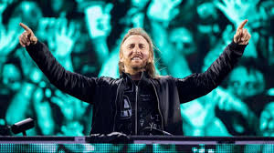
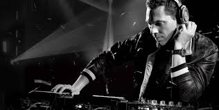
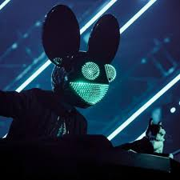

La musica electronica es mi genero de musica favorito.
Este genero se caracteriza por mezclar sonidos instrumentales con aquellos que se procesan a traves del ordenador, los sintetizadores o cualquier aparato electronico.
 David Guetta. Musico frances que cuenta con una gran cantidad de colaboraciones en el ambito musical, en las cuales ha gozado del apoyo de cantantes como Akon, Ne Yo y Kelly Rowland.
 Dj Tiesto. Este dj proveniente de los Países Bajos y reconocido productor musical. Cuenta con varios remixes que son clasicos dentro del genero y tambien ha colaborado con musicos famosos como Sarah McLachlan.
 Deadmau5. Destacado DJ de origen canadiense dentro del electrohouse y el genero de house. Su peculiar nombre artístico proviene de la peculiar mascara de raton que utiliza en cada una de sus presentaciones, a la que llama mau5head.
Tomorrowlan Este es un festival que se realiza anualmente en Boom, Belgica, este es el festivalde musica mas grade del mundo.Dado que todo comenzó en 2005 gracias alos hermanos Manu y Michiel Beers, este festival nacido en Bélgica ha alcanzado el pináculo de la música dance, presentando solo a los mejores DJ y atrayendo a fanáticos de todos los rincones del mundo. A este festival asisten mas de 400.000 personas de 200 nacionalidades distintas anualmente.
Universo Paralello A este festival se le considera uno de los mejores festivales de música electrónica de toda Latinoamérica y no es de menos; la duración del evento, la música, el arte, el ambiente y demás le otorgan fácilmente esa posición. Este festivalpuede durar hasta los 8 dias aunque por lo general dura 2 dias, comenzando en la decada de lo 90 En ese entonces eran celebraciones pequeñas donde no asistían más de 200 personas cuando mucho, pero fue creciendo al pasar el tiempo.
EDC Las Vegas Este es un festival en el cual se reunen los amantes de la musica electronica, y generos como Techno, dance-punk, Hard dance, Dubstep, Trance, Trap y muchos más, se reúnen para celebrar la vida, el amor, el arte y la música. El primer evento de este festival se celebró a principios de la década de 1990 en un campo abierto en Pacoima, Los Ángeles, California, por Gary Richards y DJ Steve Kool-Aid.
Electric Love Festival es un festival de música electrónica de baile que se celebra anualmente desde 2013. Si bien el Electric Love no tiene un background igual de inspirador que otros, sin duda hay que acreditarle el hecho de que durante los últimos años Electric Love hizo todo lo posible para traer a todos los grandes nombres de la escena EDM a Salzburgo Este festivalse realiza en Salzburgring, Austria. Rodeado por el deslumbrante distrito de los lagos de Salzkammergut, el festival une a jóvenes y adultos para celebrar la música electrónica en todas sus formas, ya sea EDM, house, techno, drum and bass, dubstep, bass y notas de estilos más duros, Electric Love se considera el festival de música electrónica líder en Austria y atrae a más de 100.000 asistentes de todo el mundo